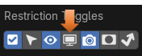

~The Outliner~
6/9/2025
What are the Icons at the End of Each Line?
The Camera button and Rendering a View
What is the Outliner?
Well, when you first take a look at this panel, you will think. “Ok, this is a list of items that is in my scene in the viewport” and you would be right; but the outliner is so much more than just this. It can be a very powerful asset in helping you organize what is there on the screen, and in the outliner too.
Blender will call each of the listed items in the Outliner a data-block. Just remember, that all a data-block actually means is a listed item in the outliner. If you click on the tiny arrow in front of the data-block, in the outliner, you will see even more listed items (um-err… I mean data-blocks).
Here is a list of what you can do in the Outliner:
View the elements that are in your scene.
Select and deselect the elements in your scene.
Hide or show an element in your scene.
Enable or disable a selection (you can lock down an object “make it un-selectable” in the 3D Viewport).
Enable or disable the rendering of an object.
Delete objects from the scene.
Unlink data (equivalent to pressing the X button next to the name of an item in the outliner).
Manage collections in the scene.
What are the Icons at the End of Each Line?
By default, these two button icons are available at the right of your listed item.
The Eye icon, will control weather you can see the item in the viewport or not. If you click on the eye next to the data-block in the outliner, you will notice that it will disappear in the viewport.
The Camera button and Rendering a View
The Camera icon will show us what is available when we render an item. In order to see this icon in action though we need to render the View.
To render the item, first we need to make sure that our scene is actually fitting in the Camera. To go to camera view, hit 0 on the numpad.
Now click on the word, Camera in the Outliner. This will open the property panel for the Camera. The Property panel is located below this panel, in the Blender application. Before you click on the word camera, in the outliner, you do not even see the Camera tab in the property panel.
Now the Camera Panel is available under it.
Focal Length is the option that control how much the camera is able to view. We can shrink down the Focal Length from 50mm to (in our case 26mm). Just move this setting down until the red ball is inside the range of the camera.
You can center the objects inside of the camera by going to the two options under the Focal Length. Shift X will shift the camera left and right. Shift Y will shift the camera up and down.
Now to see that camera icon button in action. First, we want to turn of the blue cube’s camera that is located at the end of its line. Notice that with the camera turned off, we will still see the blue cube on the screen. This is because this camera represents the blue cube, but only after it has been rendered.
So, we first need to render the image.
Go to the top of the screen and select the Render menu. Then from the drop down select Render Image.
As you can see, only the red ball was rendered. This is because we turned that little camera icon button off, in the outliner, before the image was rendered.
Click the X in the upper right-hand corner of this screen to come out of Render view.
The Funnel Button
Remember, that I had said that we could make objects in our scene selectable, or not. Well…, not exactly by default. That is because we have to turn that option on. We can find it, and turn it on by hitting the icon that looks like a funnel at the top of the panel.
Click on that funnel to view its options. At the top of this panel, you will find a row of icon buttons. These are options for buttons that we can set up to be viewed in the outliner. Instead of just showing the two buttons, and that check box for the collection, which is selected in blue, with this funnel button opened, we can now turn on more items.
That arrow that faces toward the upper left-hand corner is the button that controls select-ability of the items in the view port. If you click on that button from the funnel panel, and turn it blue, you will see a new button at the end of your items in the outliner.
You will notice that you have other buttons in this list that you can enable too.
Global Viewport Visibility (screen icon)
This will show all of your items once they are rendered, but make them invisible in the viewport. This is normally used for special circumstances which require other files to have access to your objects.
Holdout (collection only)
This will make objects invisible in both the Render and Viewport, but you will still have access to them in the outliner. – Cycles only.
Indirect Only (collection only)
This is an optimizing, memory saving option. You can designate objects to “Not” cast their own lighting; but instead, just react to lighting, which is cast by other elements in the scene– Cycles only.
A Sort Section
The next section in the outliner, provides a checkbox, that you can toggle, to decide whether you want the items in the outliner to be in Alphabetical order, or not.
Search Box
You also have a Search box at the top of this funnel panel. This way if your project becomes massively complex, you can search for block-data items in your list.
And the next section of the funnel panel, enables you to make decisions on how the criteria for that Search box will work.
Filter
The last section of the Funnel Icon button is your filter, and it deals with what particular items that you want to deal with. You can toggle these selections on or off, and then the setting that you make in this panel, will only affect those elements.
The New Collection Button
The last thing that I want to discuss in this tutorial, about the Outliner, is the ability to create a new collection. You would use collections if you want to keep certain objects in the scene organized. Let’s say you want to keep the objects that represent people, and the objects that represent buildings separated. You can put these two types of objects into different collections in the outliner. Then you can turn whole collections off with the eye icon, and just work on specific sections of your scene.
Click on this button at the top right of the panel, to add a new collection.
Now turn off the eye on that first collection that we created. Clicking on the eye at the end of the Collection line, turns off all of its children.
Now we only see that second collection. The first collection with the ball and the cube is no longer there.
Well, that is just all there is to it. The Outliner, all wrapped up in a nutshell. It really is a very useful tool, and you will find yourself using different features in this panel all the time.